ハックのせかいへようこそ！
Welcome to the World of H@<K!
プロット
Plot
-
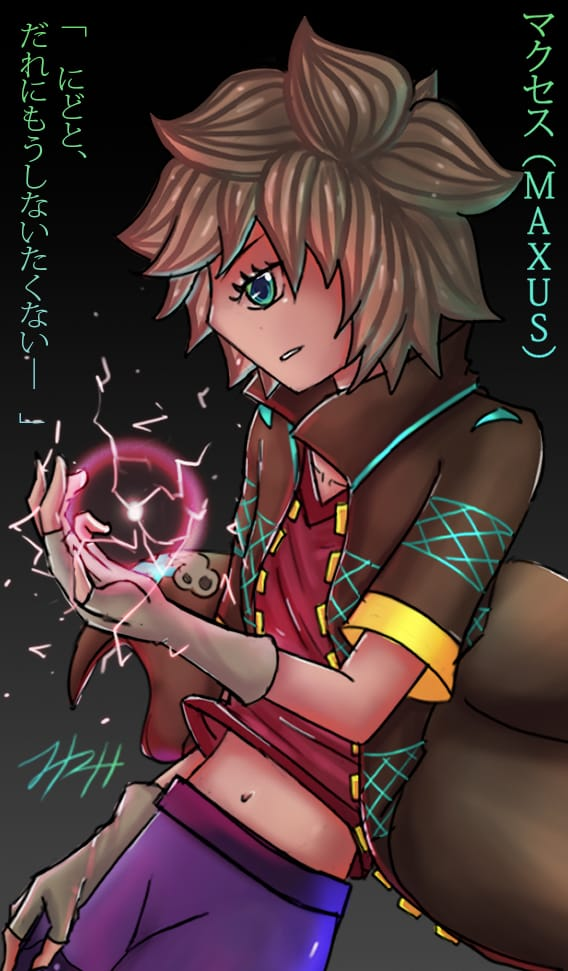
ハックテクティブスのリーダーであるマクセスが、政府を首謀者として不吉な陰謀に出くわしたとき、彼女は、現実世界の市民とデジタル世界の両方のために戦って、すべての人に彼らの不正行為を明らかにすることを決意しました。しかし、彼女が深く見るほど、彼女は自分自身を危険にさらします。毎回新しい敵がいるので、兄弟や友人を守るために必要なすべてが必要になります。
(Very rough translation. Fix later.)
(Click for English)When Maxus, leader of the Hacktectives, stumbles upon a sinister plot, with the government as its mastermind, She is determined to expose their wrongdoings for all to see, fighting both for the citizens of the physical world, as well as the digital world.
However, the deeper she looks, the more danger she finds herself in.
With new enemies at every turn, it will take all she's got to protect her siblings and friends.
(日本語はクリックしてます) -
人々が誘拐されているとき、ハイドラは、政府のアトランティス、物理的な世界のクラッチから逃れたい人々がいるデジタルワールド、ジオニックス内の聖域であるフリーダムウィングスからの主要な自由の闘士として再び最前線に戻されます 、常駐させられます。 すべてのヒントが古い敵と、デジタル世界での存在感が急速に拡大している政府につながるため、物事は暗いように見えます。
(Very rough translation. Fix later.)
(Click for English)When people are being kidnapped, Hydra is brought back on to the front lines again as the main freedom fighter from Freedom Wings, a sanctuary within the Digital World, Zionix, where those who want to escape the clutches of the government of Atlantis, the Physical world, are brought to reside.
Thing look bleak as all the hints lead back to an old enemy, as well as to the Gov, whose presence in the digital world is expanding quickly.
(日本語はクリックしてます) -

マウスは、彼女の反逆者グループであるターコイズファイアを率いて、姉を連れ去ったことで政府に対する反乱に失敗した後、深層ウェブで死んだままにされました。 ギャング全体が深層ウェブで立ち往生しているので、彼らの唯一の望みは、デジタル世界の本土への道をコーディングすることです。 彼女は、たとえそれが言いようのないことをすることを意味するとしても、彼女のチームをトップに戻し、彼女の妹を政府の手から取り戻すことをこれまで以上に決心しています。
(Very rough translation. Fix later.)
(Click for English)Mouse was left for dead in the deep web after leading her rebel group, Turquoise Fire in a failed revolt against the gov for taking her older sister away.
With the whole gang stuck in the deep web, their only hope is to code their way up to the main land of the digital world.
She is more determined than ever to lead her team back up to the top and take her sister back from the clutches of the gov even if it means doing the unspeakable.
(日本語はクリックしてます) -
保護された金持ちの女の子であるアリスは、彼女の親友である猫の少年であるチェシャーと一緒に、初めてデジタルの世界に足を踏み入れ、最も近いデジタル世界への入り口であるハッカーランドの未知の地形を横断しながら、行方不明の父親を探します 彼女の家の場所に。 ここで、彼女は多くの最初に遭遇します。 彼女の最初の戦い、最初の愛、そして何よりも重要なことは、彼女は初めて、父親の本当のアイデンティティが何であるかを学びます。
(Very rough translation. Fix later.)
(Click for English)Alis, a sheltered rich girl, along with her best friend, Cheshire, a cat boy, venture into the digital world for the first time, looking for her missing father while traversing through the unknown terrain of Hackerland, the portal into the digital world nearest to her home location.
Here, she encounters many firsts.
Her first fight, first love, and most important of all, she learns for the first time, what her father's true identity is.
(日本語はクリックしてます) -

マルは、政府に反対するすべての人を破壊しようとするバイオエンジニアリング兵器です。 彼女はすぐに自分が嘘の網に巻き込まれていることに気づき、自分が知っていると思っているよりも自分のことをあまり知らないことに気づきます。 それから、彼女の記憶に現れるネズミがいますが、彼女は自分が誰であるかを思い出せませんが、政府に対する彼女の確固たる信念を妨害しています。 彼女は自分のアイデンティティと存在を疑うようになり、すぐに自分の過去と自分がどのようになってきたかを知り始めます。
(Very rough translation. Fix later.)
(Click for English)Mal is a bio engineered weapon who seeks to destroy all who oppose the gov.
She soon finds herself entangled in a web of lies and finds out that she knows less about herself than she thinks she knows.
Then there’s Mouse, who shows up in her memories, though she can’t remember who she is, thwarting her solid belief in the gov.
She starts to doubt her identity and existence and soon sets out to find out about her past and how she came to be.
(日本語はクリックしてます)
キャラクター
Characters
- 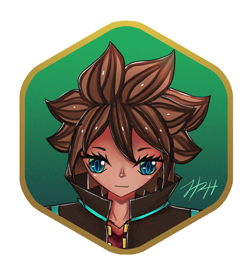
-
×
マクセス
Maxus
年齢/Age: 21
所属/Affiliation: ハックテクティブス / The Hacktectives


マナ/Mana: 800
レベル/Level: 5S (50L)
属性/Attribute: 火/Fire
要素/Element: 雷/Lightning
概要/About:
マクサスは天才ハッカーであり探偵です。 彼女はハッカーの力を使って怪しげな地下の闇市場のディーラーをいじり、しばしば彼らの陰湿な活動を明らかにし、警察が彼らをマスクされたペルソナの下で逮捕するためのヒントを残しました。
ハッキングや探偵の仕事をしていないときは、ホバーボードにスリル満点で乗るのが大好きです。
彼女はまた、彼女の若い「妹たち」であるジョリーアンとサリーを非常に保護しており、血縁関係はありませんが、通常の姉妹と同じくらい親密です。
Maxus is a prodigy hacker and detective. She became an S Ranked elite hacker at a young age and used her hacker powers to mess with shady underground black market dealers, often bringing their insidious activities to light and leaving tips for police to arrest them under a masked persona simply because she thinks it is fun.
When she is not hacking or doing detective work, she loves riding her hoverboard in a thrilling fashion.
She is also very protective of her younger "siblings", Jolly-Ann and Sally, and though not related by blood, they are as close as regular siblings are.
Voice:
能力/Powers:
Ability # 1
Maxus's main ability is red lightning.
Ability # 2
Maxus is able to summon explosive electric spheres but they're most effective in close range.
Ability # 3
Maxus can summon electric beams that can pierce through barriers.
Sword Summon:
As an S ranked Elite Hacker who is also a digital being, Maxus is able to summon a sword that she'd built out of code at will.

-
×
サリ
Sally
年齢/Age: 17
所属/Affiliation: ハックテクティブス / The Hacktectives
概要/About:
サリーは、ジョリーと一緒に、マクサスの幼なじみでした。 彼女はマクサスを姉と見なし、ジョリーを妹のように世話しています。
彼女は、ほとんどの人が一見気付かないかもしれないことに気付くコツを持っており、多くの場合、事件の解決を支援する上で主要な役割を果たしています。
サリーは古い映画を見たり、人気のあるモデルをフォローしたりするのが大好きで、よく似た服装をしたり、模倣したりしようとします。 彼女はとてもロマンチックな人で、彼氏が欲しいと切望しています。
Sally, along with Jolly, was Maxus's childhood friend. She considers Maxus her older sister and takes care of Jolly like she's a younger sister.
She has a knack for noticing things that most people might not notice at first glance, often playing a major role in helping solve cases.
Sally loves watching old movies and following popular models and often tries to dress like them or imitate them. She's very much a romantic person and longs to have a boyfriend. 
-
×
ジョーリ アンー
Jolly-Ann
年齢/Age: 15
所属/Affiliation: ハックテクティブス / The Hacktectives
概要/About:
ジョリーアン別名「ジョリー」は、マクサスとサリーの幼なじみです。
彼らは彼女が今までに持った最初の友達であり、彼女は彼らの両方を尊敬し、彼女の姉として彼らを考えています。 彼女の年齢にもかかわらず、彼女はかなり背が低く、かわいくて、子供のように無邪気に見えます。
これは、かわいい無実の小さな子供がスパイであると誰も疑わないので、彼女をスパイに適したものにします。
ジョリーはおやつが大好きです。 特にケーキ。 余暇には、ペットを飼う猫を探すのが好きで、かわいい、無邪気で、小さいものすべてが大好きです。
Jolly-Ann aka "Jolly" is Maxus and Sally's childhood friend.
They were the first friends she's ever had and she looks up to both of them and thinks of them as her older sisters. Despite her age, she's pretty short, cute, and innocent looking in a child like way.
This makes her a good fit for spying as no one would suspect the cute innocent little kid to be a spy.
Jolly loves snacks. Especially cakes. In her spare time, she likes looking for cats to pet and loves all things that are as cute, innocent and small as she is. - 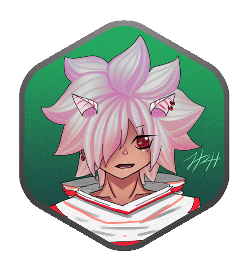
-
×
ケール
Kale
年齢/Age: 18
所属/Affiliation: ハックテクティブス / The Hacktectives
概要/About:
ケールは、マクサスによって子猫として救われた猫人です。 ハックテクティブスでの彼の役割は、基本的に、サリーとジョリーがミッションに出ている間、彼らのボディーガードになることです。
ハックテクティブスは探偵でありボディーガードサービスエージェンシーであるため、彼はマクセスと共にボディーガードサービスを提供する人物です。
暇なときは、街を探索するのが好きです。
Kale is a catboy who was saved by Maxus as a kitten. His role in the Hacktectives is basically to be a bodyguard for Sally and Jolly while they are out on missions.
As The Hacktectives is a Detective AND a Bodyguard service agency, he, along with Maxus, are the ones who provide the bodyguard service.
In his spare time, he likes to explore the city. 
-
×
ザイヤ
Ziah
年齢/Age: 35
所属/Affiliation: ハックテクティブス / The Hacktectives
概要/About:
ジアはジョリーのずっと兄です。 彼は現在のハックテクティブスの作成者でした。 ジャーナリストだった妹, コーミ,（ジョリーの姉）が陰謀を深く掘り下げたために標的にされ殺された後、彼と彼の家族にとって物事がより危険になり始めたとき、彼はハクテクティブな仕事をやめました。
もともと彼と彼の両親はジョリーがサリーとマクサスと一緒にハックテクティブスに参加することを望んでいませんでしたが、彼女は彼女が参加することを主張し、答えを拒否しませんでした。
彼は今やガジェットの作成者であるため、彼自身の科学的研究に取り組んで、平和で引退した生活を送ることに時間を費やしています。 ハックテクティブスの一部ではなくなりましたが、彼は時々ハックテクティブスにチェックインします。
Ziah is Jolly's much older brother. He was the creator of what is now the Hacktectives. He stopped doing Hacktective work when things started getting more dangerous for him and his family after his younger sister, Khomi, (Jolly's older sister), who was a journalist was targeted and killed for digging too deep in a conspiracy.
Originally he and his parents didnt want Jolly to join the Hacktectives with Sally and Maxus but she'd insisted that she would join and would not take no for an answer.
He now spends his time living a peaceful, retired life, working on his own scientific studies as he's somewhat of a gadget creator. Although not part of the Hacktectives anymore, he checks in with them every once in a while. - 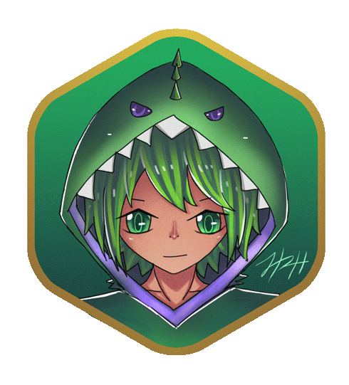
-
×
ハイドラ
Hydra
年齢/Age: 18
所属/Affiliation: フリーダム ウィングス / Freedom Wings
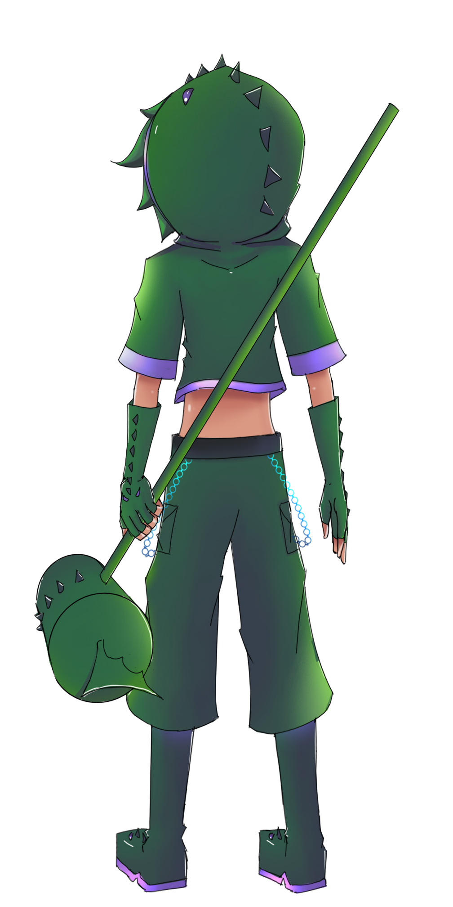
マナ/Mana: 300
レベル/Level: 4.5s (45L)
属性/Attribute: 風/Wind
要素/Element:風/Wind
概要/About:
ハイドラは幸運な子供であり、フリーダム ウィングスの最も著名なメンバーでもあります。 彼は偵察任務も時々行うが、彼は主に抽出任務を引き受ける。 彼のクライアントは主に誘拐されて誰かのために働くことを余儀なくされた人々です。
彼のニックネームは「フリーダム ウィングスの風」です。これは、彼の要素が風であるという事実と、彼の速さからです。 彼は敵に彼の攻撃で派手であり、彼らが彼を止めることができるということではなく、彼の道を場所に強引に押し付けていることで知られています。
余暇にはスリルを求める人で、ペットの知覚力のあるスレッジハンマーのような兄弟と一緒にレーシング居酒屋に行くのが好きです。セバスチャンは乗るだけでなく、ミッションで武器としても使用します。 彼はまた読むのが好きです。
Hydra is a happy-go-lucky kid who also happens to be the most prominent member of Freedom Wings. He takes mostly extraction missions though he ocassionally does reconnaisance missions as well. His clients are mostly people where were kidnapped and forced to work for someone.
His nickname is "The Wind of Freedom Wings" due to the fact that his element is wind and also because of how fast he can be. He is know by his enemies for being flashy in his attacks and bruteforcing his way into places, not that they can stop him.
In his spare time, he is a thrillseeker and likes to go to a racing tavern with his sibling like pet sentient sledgehammer, Sebastian, whom he rides on but also uses as a weapon when he's on missions. He also likes to read.
Voice:
能力/Powers:
Ability # 1
Hydra's signature move is a "reverse halfpipe slam".
Ability # 2
Hydra can spin Sebastian in a circular motion, creating a barrier of sorts.
Ability # 3
Hydra can summon an illusion that can be used to attack or defend.
Ability # 4
Hydra can spin Sebastian and create a tornado-like wind blast.
- 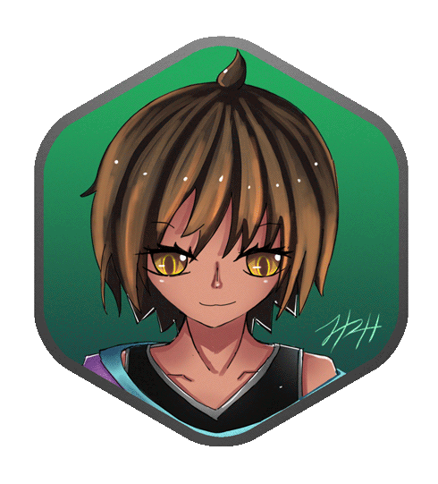
-
×
さい
Sai
年齢/Age: 22
所属/Affiliation: フリーダム ウィングス / Freedom Wings
概要/About:
「さい」はフリーダムウィングの基地の創設者です。 フリーダムウィングスの全員の中で、マナが最も多いのは彼女で、「フリーダムウィングスの貯水池」というニックネームが付けられています。 彼女の任務は通常、基地に電力を供給するために使用される大きなマナクリスタルを集めることを伴います。
彼女はまた、ハイドラのクライアントが救出された後に居住するように連れて行かれるフリーダムウィングの聖域の保護者でもあります。 そういうわけで、彼女はあまり長く基地を離れることができず、彼女が任務に出ている間、他の誰かが聖域を守る必要があるでしょう。
任務活動をしていないとき、彼女は聖域を賞賛し、その住民と話し、彼らを知るのが好きです。
Sai is the creator of the Freedom Wing's base. Out of everyone at Freedom Wings, she is the one with the most mana, earning her the nickname "The Resevoir of Freedom Wings". Her missions usually entail gathering large mana crystals that is used to power the base.
She is also the guardian of Freedom Wing's Sanctuary where Hydra's clients are taken to reside after being rescued. Being such she can't leave the base for too long and someone else will need to guard the sanctuary while she's away on missions.
When not on missions, she likes to admire the sanctuary and talk to its inhabitants and getting to know them. -
×
エル
Aeru
年齢/Age: 20
所属/Affiliation: フリーダム ウィングス / Freedom Wings
概要/About:
アエルはフリーダムウィングスの偵察側にいます。 彼はサイに恋をしていて、ハイドラを弟だと思っています。
彼は幼い頃に姉のアリと一緒にフリーダムウィングスに入社しました。アリは街に引っ越してからフリーダムウィングスの非公式メンバーになりましたが、彼女はまだ街で見つけた情報を彼に与えています。
余暇には、アエルは街を探索したり、アリとおしゃべりしたりするのが好きです。
Aeru is more on the reconnaisance side of Freedom Wings. He has a crush on Sai and thinks of Hydra as a little brother.
He joined Freedom Wings with his older sister, Ari, at a young age and though Ari is now an unofficial member of Freedom Wings after moving to the city, she still gives him intel that she finds in the city.
In his free time, Aeru likes exploring the city and chatting with Ari. - 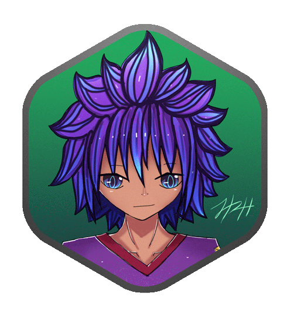
-
×
ランサム
Ransom
年齢/Age: 19
所属/Affiliation: フリーダム ウィングス / Freedom Wings
概要/About:
ランサムは、抽出ミッションを介してハイドラに救われた後、フリーダムウィングに加わりました。
彼の使命は主に、ザイヨンニックス警察が危険な犯罪者を捕まえるのを助けることです。
ミッションに参加していないときは、建物の上に立って景色をチェックするのが好きです。
Ransom joined Freedom wings after he was saved by Hydra via a extraction mission.
His missions mostly consist of helping Zionix police catch dangerous criminals.
When not on missions, he likes to check out the scenery while standing atop buildings. - 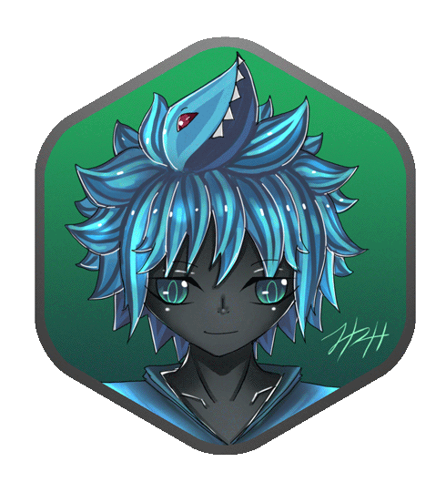
-
×
コベ
Kobe
年齢/Age: 16
所属/Affiliation: フリーダム ウィングス / Freedom Wings
概要/About:
神戸は、ヒドラが任務を遂行している間にヒドラに助けられた人魚-鮫-少年です。
その後、ハイドラは神戸をフリーダムウィングスに招待しました。彼のユニークな力、つまり、設定されたときに変異なデータのささやきをキャプチャする電磁ワイヤーです。
それとは別に、彼は氷の力も持っています。
任務活動をしていないとき、神戸は街でたむろするのが好きです。
おもしろい事実、彼は独自の個性を持っている彼の髪に存在するサメの精神で生まれました。
Kobe is a mersharkboy who was helped by Hydra while the latter was on a mission.
Hydra then invited Kobe to join Freedom Wings because of his unique powers - electromagnetic wires that captures whispers of rogue data when set.
Aside from that, he also has ice powers.
When not on missions, Kobe likes to hang out in the city.
Fun Fact, he was born with a shark spirit that resides in his hair which has its own personality. - 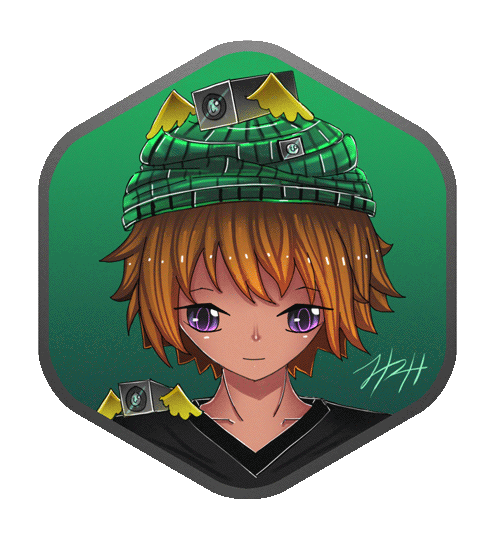
-
×
スパイダ
Spydr
年齢/Age: 17
所属/Affiliation: フリーダム ウィングス / Freedom Wings
概要/About:
スパイダはフランス人の男の子で、機械を作るのが好きで、服や周りに知覚力のあるペットのカメラを隠しています。 フリーダムウィングの主なスパイとして、彼はフリーダムウィングに参加する適切な人々を積極的に探し、敵をスパイして常に一歩先を行くようにしています。
彼の力には、カメラを使用してレーザーや風力を発射することが含まれます。
彼の趣味は、力学をいじくり回したり、音楽を聴いたりすることです。
Spydr is a French looking boy who likes to create machinery and has hidden sentient pet cameras in his clothes and around him. As the main spy for Freedom Wings, he actively look for the right people to join Freedom Wings as well as spies on their enemies to always stay one step ahead of them.
His powers include using his cameras to shoot lasers and wind powers.
His hobbies include tinkering with mechanics and listening to music. - 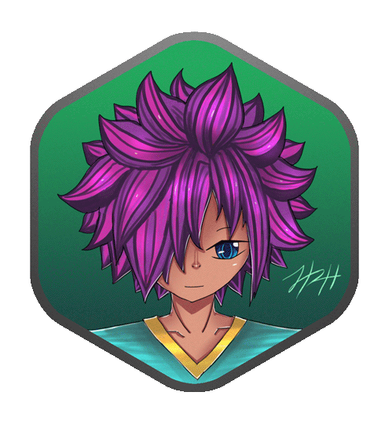
-
×
カリ
Kali
年齢/Age: 18
所属/Affiliation: フリーダム ウィングス / Freedom Wings
概要/About:
カーリーはフリーダムウィングのホストです。 彼は、入ってくるミッションを管理し、メンバー間でそれらを分割する人です。
彼は他の人ほど基地を離れませんが、他の人が任務に就いているか、一般的に外出している間、基地を監視します。
フリーダムウィングスは一種の秘密グループであるため、フリーダムウィングスの顔として、クライアントとのミーティング中にマスクを着用することがよくあります。
彼の能力はカードにあります。 彼の能力についてはあまり知られていませんが、彼は比較的強力であると言われています。
Kali is the host of Freedom Wings. He is the one who manages the incoming missions and divies them out amongst the members.
He doesn't leave the base as much as the others but watches it while the others are on missions or out in general.
As the host of the Freedom Wings, he often wears a mask while meeting with clients as Freedom Wings is kind of a secretive group.
His abilities reside in cards. While not much is known about his abilities, it is said that he is relatively powerful. - 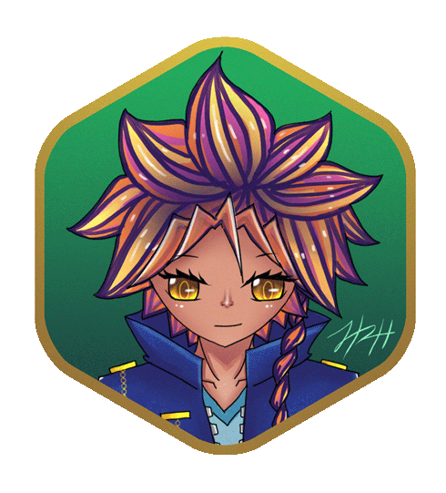
-
×
マウス
Mouse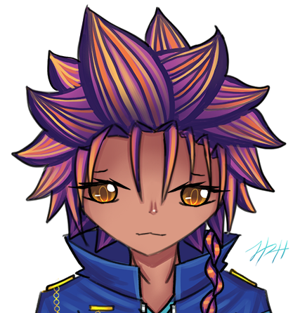 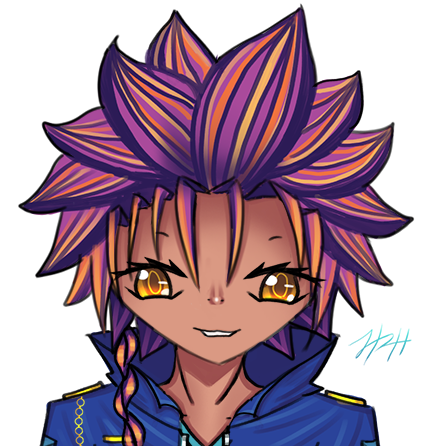
年齢/Age: 16
所属/Affiliation: ターコイズ ファイア / Turquoise Fire
マナ/Mana: 750
レベル/Level: 2.3s (23L)
属性/Attribute: Earth
要素/Element: Power Dominance
概要/About:
マウスは反乱グループのターコイズファイアのリーダーです。 彼らの主な目標は、マウスの姉であるマルーをアトランティス政府の手から救うことです。
幼い頃に妹を亡くしたことで、彼女は他の人々から遠ざかり、遠ざかりましたが、彼女は気になる人々、特にチェスティルと非常に親密です。
Mouse is the leader of the rebel group Turquoise Fire. Their main goal is to save Mally, Mouse's sister, from the clutches of the Atlantis Gov.
Losing her sister at a young age made her more distant and aloof to other people, but she is very close with those she cares about, especially Chestil.
Voice:
能力/Powers:
Ability # 1
Mouse can turn other creatures into Weapons with their consent.
Ability # 2
With her Commanding Aura, Mouse can command creatures that are much lower level than her.
Ability # 3
Mouse can stop lower level enemies in their tracks.
Ability # 4
Mouse is able to scry through and possess lower level creatures.
- 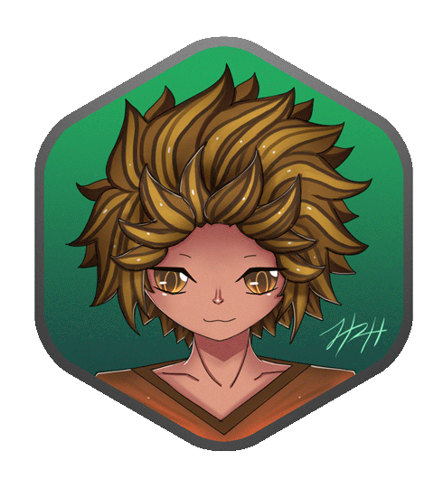
-
×
チェスチル
Chestil
年齢/Age: 16
所属/Affiliation: ターコイズ ファイア / Turquoise Fire
概要/About:
チェスティルはマウスの幼なじみで、彼女に恋をしたので、彼女がアイデアを思いついたとき、彼の兄弟であるバンクと一緒にターコイズファイアに自然に加わりました。
彼はいじくり回しであり、武器や乗り物を強化するのが大好きです。
Chestil is Mouse's childhood friend who has a crush on her and thus naturally joined Turquoise Fire with his brother, Bank, when she brought up the idea.
He is a tinkerer and loves to make enhancements to weapons and vehicles. -
×
バンク
Bank
年齢/Age: 19
所属/Affiliation: ターコイズ ファイア / Turquoise Fire
概要/About:
バンクはチェスティルの兄で、チェスティルをトラブルから守るためにターコイズファイアに加わった。
彼は非常に率直で、彼の心を話すことを恐れていません。
彼は、特にそのような若い年齢で彼女の妹を失って以来、非常に強いがあることでマウスを尊敬しています。
Bank is Chestil's older brother who joined Turquoise Fire to keep Chestil out of trouble.
He is very candid and is not afraid to speak his mind.
He looks up to Mouse for being so resilient, especially since losing her sister at such a young age. - 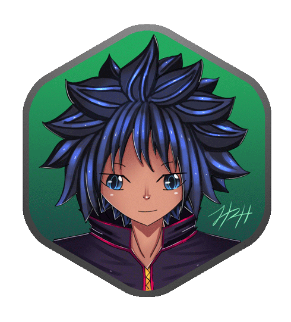
-
×
コデ
Cody
年齢/Age:
所属/Affiliation: ターコイズ ファイア / Turquoise Fire
概要/About: 18
コーディは、政府の秘密を反政府勢力に漏らした逮捕を回避しながら、「ドゥームポータル」を使用して誤って自分自身をザイヨンニックスの外縁にテレポートし、マウスの上に落ちるまで永遠に自由落下する運命にありました。
そこで、彼はマウスに加わり、彼女が妹を探すためにザイヨンニックスの最上層に戻ろうとします。
Cody accidentally teleported himself using the "Doom Portal" to the outer rims of Zionix while evading arrest for leaking government secrets to rebels, fated to freefall forever, until he fell on top of Mouse.
There, he joins Mouse as she tries to get back up to the top layers of Zionix to look for her sister. 
-
×
アリス
Alis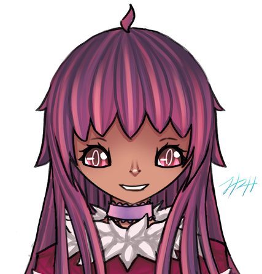 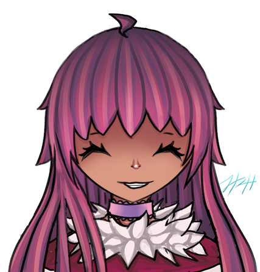 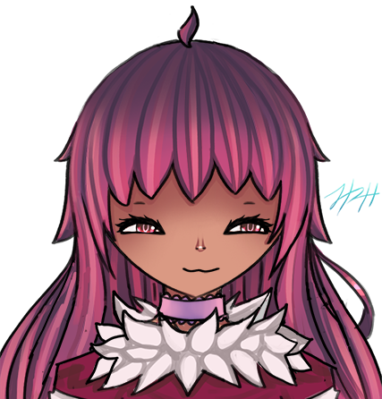
年齢/Age: 16
所属/Affiliation: ハッカーランド群 / The Hackerland Group
マナ/Mana: 400 (below average for Attribute type)
レベル/Level: 1.5s (15L)
属性/Attribute: Fire
要素/Element: None
概要/About:
アリスは、彼女の親友チェシャーが彼女にそれについて話した後、ザイヨンニックスのデジタルワールドに魅了されている裕福な、保護された女の子です。
彼女は素朴で無実ですが、世界中の誰もが良い人であるとは限らないことを知っていますが、それでも世界の人々の良さを信じようと努めています。
Alis is a rich, sheltered girl who is fascinated by the Digital World of Zionix after her best friend Cheshire told her about it.
Although she is naive and innocent, she knows that not everyone in the world is a good person, but still strives to believe in the goodness of people in the world.
Voice:
能力/Powers:
Ability # 1
Alis is able to float her knives and swirl them around in the air.
Ability # 2
Alis is able to create a barrier using her knives.
Ability # 3
Alis is able to summon flames around her knives as part of her knives' functionality.
Ability # 4
Alis is able to summon a barrage of knives and can aim and shoot with them.
-
×
チェシャー
Cheshire
年齢/Age: 18
所属/Affiliation: ハッカーランド群 / The Hackerland Group
概要/About:
チェシャーは、幼い頃に誘拐されてサーカスの所有者に売られた、ザイヨンニックスのデジタル世界出身の猫人です。
彼は数年前にアリスに助けられ、それ以来彼女と一緒にいて、彼女の親友になりました。
チェシャーはアリスを非常に保護しています。
Cheshire is a catboy originally from the digital world of Zionix, who was kidnapped and sold to a circus owner at a young age.
He was rescued by Alis a few years ago and has stayed with her since, becoming her best friend.
Cheshire is very protective of Alis. - 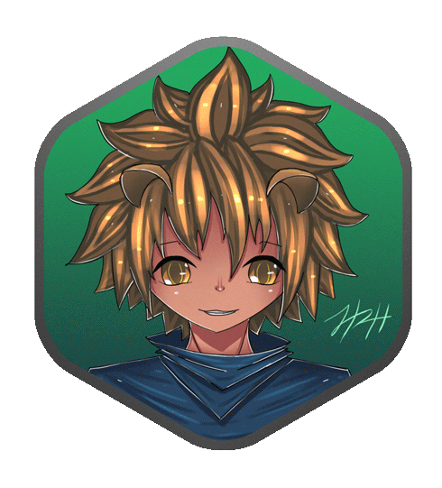
-
×
ドルマウス
Dormouse
年齢/Age: 16
所属/Affiliation: ハッカーランド群 / The Hackerland Group
概要/About:
ドルマウスは幼い頃に両親を亡くした後、叔母と一緒に暮らす鼠人です。
彼女が最初にチェシャーと一緒にザイヨンニックスに足を踏み入れ、彼女に加わったとき、彼はアリスに会い、世界を探検したいと思っていました。
鼠人(ライゴール)として、彼は本当に良い治療者ーです。
Dormouse is a mouseboy who lives with his aunt after losing his parents at a young age.
He met Alis when she first ventured into Zionix with Cheshire and joined her, wanting to explore the world.
As a mouseperson (Raigor), he is a really good healer. -
×
ボシ
Boshi
年齢/Age: 14
所属/Affiliation: ハッカーランド群 / The Hackerland Group
概要/About:
ボシは帽子作りと麻薬取引を専門としています。
彼はあらゆる種類の麻薬、ポーション、毒について多くのことを知っています。
彼女がギャングのメンバーから彼を救った後、彼はハッカーランドグループの4番目のメンバーとしてアリスに加わります。
Boshi specializes in making hats and drug dealing.
He knows a lot about all sorts of drugs, potions, and poisons.
He joins Alis as the 4th member of the Hackerland Group after she saves him from some gang members. - 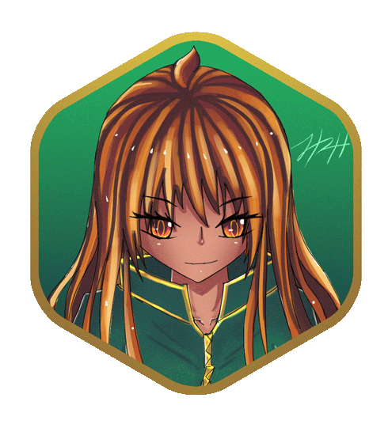
-
×
マル
Mal
年齢/Age: 21
所属/Affiliation: アトランティスの政府 / GOV (Atlantis)
マナ/Mana: 850
レベル/Level: 6.7s (67L)
属性/Attribute: Fire
要素/Element: Fire
概要/About:
マルは、彼女が政府のために働く前に彼女の過去の記憶を持っていないバイオエンジニアリングされた武器です。
彼女は政府に忠実で、ほとんど過ちを犯している。
彼女が彼女の過去についてますますフラッシュバックを持ち始めると、彼女は彼女の隠された過去を見つけようとするときに彼女の忠誠心は揺らいでいます。
Mal is a bio-engineered weapon who has no recollection of her past before she worked for the gov.
She is loyal to the gov, almost to a fault.
As she starts to have more and more flashbacks about her past, her loyalty wavers as she tries to find out her hidden past.
Voice:
能力/Powers:
Ability # 1
Mal's main ability is her implants. They are almost indescructible.
Ability # 2
When Mal's using her implants, her signature attack is her flaming claws.
Ability # 3
Mal uses wired daggers for long range attacks. They can also be powered up to increase the damage they can do multifold.
Ability # 4
Mal is able to create/summon virus creatures to be her minions.
-
×
ホクト
Hockt
年齢/Age: 20
所属/Affiliation: アトランティスの政府 / GOV (Atlantis)
概要/About:
ホクトは幼なじみだったのでマルの過去を知っていますが、政府がマルに彼女の過去を思い出させないことを知っているので、たとえ彼がそうしたとしても、彼女はこの時点で覚えたくないので、彼は彼女に思い出させようとしません。
彼は、マルを助ける最善の方法は、政府と協力し、彼女と一緒にいることであると決定しました。
Hockt knows of Mal's past as they were childhood friends but knowing the gov won't let Mal remember her past, he doesnt try to remind her, as even if he did, she would not care to remember at this point.
He decided that the best way to help Mal is to work with the Gov and stay with her. -
×
レクソ
Lexo
年齢/Age:
所属/Affiliation: アトランティスの政府 / GOV (Atlantis)
概要/About: 20
レキソは、妹のために薬を提供されるという契約を結んだため、政府に加わった。
彼は実際には仕事を気にせず、政府の暗殺者であり、危険であるかもしれないので、利益はそれだけの価値があると感じています。
Lexo joined the gov due to a deal he got where he would be provided with medicine for his younger sister.
He actually does not mind the job, being an assassin for the gov, dangerous as it may be, he feels the benefits are worth it. - 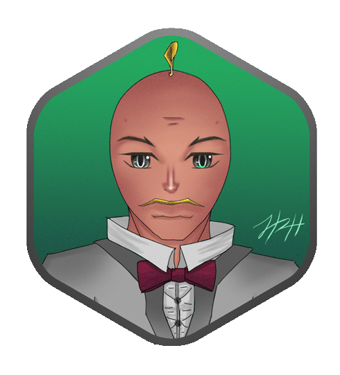
-
×
バエド-リ
Badely
年齢/Age: 40
所属/Affiliation: アトランティスの政府 / GOV (Atlantis)
概要/About:
バエド-リはアトランティスの世界的リーダーです。 彼は彼の人々と部下をよく扱います。
彼は多くの人の生存を確保するために1人を犠牲にすることを信じていますが、彼は何をしても、アトランティスの人々の死傷者を最小限に抑えるように努めています。
Badely is the world leader of Atlantis. He treats his people and subordinates well.
He believes in sacrificing one to ensure the survival of many, though he does try to ensure that no matter what he does, it results in the least casualties to the people of Atlantis. - 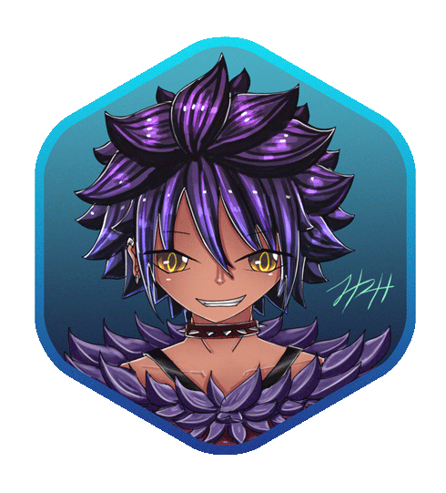
-
×
ギリアン
Gillian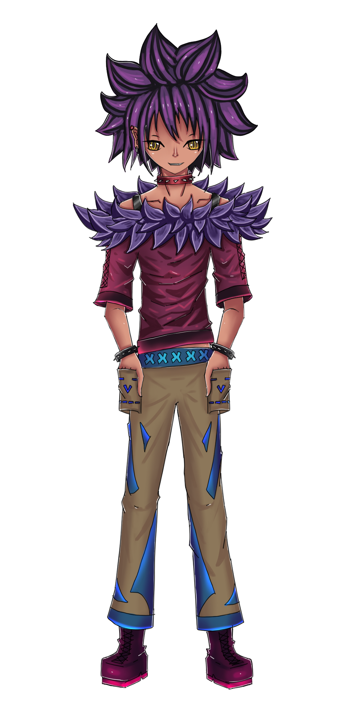
年齢/Age: 23
概要/About:
ギリアンはアトランティスの警察署長であり、これまでその地位を保持した中で最年少です。
余暇には、妹のインコとモデルを組んでたむろしている。
彼はマクセスとも親友です。
Gillian is the police chief of Atlantis and is the youngest one to ever hold that position.
In his spare time, he models and hangs out with his younger sister Inko.
He is also best friends with Maxus. -
×
インコ
Inko
年齢/Age: 19
概要/About:
インコはジリアンの妹です。 彼女は政府のジリアンの下で逮捕者として働いており、しばしば犯罪者を捕まえるのを手伝っています。
余暇には、インコは時々ジリアンにモデルを与える服をデザインします。
Inko is Gillian's younger sister. She works under Gillian in the Gov as an Apprehender, often helping to catch criminals.
In her spare time, Inko designs clothes which she sometimes gives Gillian to model with. -
×
ムサシ
Musashi
年齢/Age: 28
概要/About:
武蔵は闇市場のダークロードの一人です。
彼女は臓器売買を専門としていますが、仲介者として行動する以外に自分自身で行動に参加することはありません。
彼女は子供たちに弱い立場にあり、孤児になった子供たちを受け入れて世話をし、しばしば困難な状況から子供たちを助けます。
Musashi is one of the Dark Lords of the Black Market.
She specializes in organ trafficking but never partakes in the act herself other than act as a middleman.
She has a soft spot for kids and takes in orphaned children and cares for them, often helping them out of difficult situations. -
×
コーデク
Codec
年齢/Age: Immortal - Physically 18
概要/About:
コーデックは吸血鬼の王子であり、アトランティスで最後に生きている吸血鬼です。 彼には不思議な過去があり、サリーを知っているようです。 彼は後にハックテクティブスを助け、サリと友達になりました。
Codec is a vampire prince, and is the last living vampire in Atlantis. He has a mysterious past and appears to know Sally. He later helps the Hacktectives and befriends Sally. -
×
メロデイー
Melody
年齢/Age: 19
概要/About:
メロディーはバエド-リーの娘であり、バデリーがどこかに行くために基地を離れる機会に政府の基地を維持しています。
彼女の父親とは親しいですが、彼らが同意しない彼の統治方法の多くの側面があります。
Melody is Badely's daughter and maintains the gov base on the ocassion that Badely leaves the base to go somewhere.
Though close with her father, there are many aspects of his way of governing that they do not agree on. -
×
ボーンス
Bones
年齢/Age: 23
概要/About:
ボーンズはブラックマーケットの他のダークロードの1つです。
彼はインプラントの販売を専門としています。
そのため、彼はパッチが適用されないことの危険性を十分に理解しており、常にすべてのインプラントにパッチが適用されていることを確認します。
彼はチーズケーキの恋人です。
Bones is one of the other Dark Lords of the Black Market.
He specializes in selling implants.
As such he knows full well the dangers of being unpatched and always makes sure all his implants are patched.
He is Cheesecake's boyfriend. -
×
チズケーキー
Cheesecake
年齢/Age: 20
概要/About:
チーズケーキは、人食いチーズケーキをに変身する能力を持つ女の子です
彼女は人食いチーズケーキ小さな男を召喚することもできます。
短めですが、とても強く、片手でピアノを持ち上げることができます。
彼女はキンガという生意気な子猫を飼っています。
彼女はボーンズのガールフレンドです。
Cheesecake is a girl with the ability to turn herself into a man-eating cheesecake.
She can also summon small man-eating cheesecakes as well.
Though shortish, she is very strong and can lift a piano with one hand.
She has a sassy kitten named Kinga.
She is Bones's girlfriend. -
×
ノリ と シロ
Nori and Shiro
年齢/Age: Both 18
概要/About:
シロとノリは双子の姉妹です。 彼らは幼い頃に政府に受け入れられ、戦闘に熟練しています。
姉として、シロはノリを守っていますが、ノリはもっと遊び心があります。
彼らは政府のために働くことを楽しんでいませんが、それが彼らに与える安定性のためにそれを我慢しました。
Shiro and Nori are twin sisters. They were taken in by the gov at a young age and are skilled in combat.
As the older sister, Shiro is protective of Nori while Nori is more playful.
Though they do not enjoy working for the gov, they put up with it due to the stability it gives them.
セッティング
Setting
-
×
アトランティス ー 物理的なせかい
▶ (More About Atlantis) ◀(back)
Atlantis - The Physical WorldLocations:
The world of Atlantis (Formerly known as Earth) has changed quite a lot in its history.
Due to continental drift, the world has mostly become one large piece of land.
The land is split into 4 major cities: The Fortress, Exodus, The Quarries, and Jollyland.
Magic/Powers:
Due to The White Rose rebellion led by glitches from Zionix who caused a lot of destruction in Atlantis, Magic is currently banned, with rare exceptions.
All digital beings who want to reside in the physical world permanantly needs to apply for citizenship and go through a strict vetting process.
Glitches, powerful digital beings who have the capacity to lose control of their powers and cause destruction are to be captured immediately.
Anyone who has abilities of any sort that are discovered by the gov are gathered and moved to the "White Palace" both for their own safety (from being picked on by everyday people) and for the safety of society, should they lose control of their powers.
Implants that allow for special powers or abilities are, however, allowed, so long as they are not illegal implants. All Implants need to be registered.
The only people exempt from the "magic stigma" are registered Elite Hackers. Though most Elite hackers use code runes, there are some elite hackers who have powers due to going to Zionix and acquiring them. In cases where the Gov needs to capture rogue Elite hackers, they have their own Elite team called the C-Bops to deal with that.
Anatomy:
In Atlantis, people have evolved to be able to reproduce only through small cylindrical incubators using just a single drop of blood with their significant other to insert the DNA and start the growing of the child.
Children develop in the incubator and learn their K-12 via the incubator. If an item falls in the incubator while the baby is developing, they will develop powers related to that item.
Once fully developed, after 5 years, they emerge as a 5 year old child, their incubator turning into a device that is both used as a secure bank and payment device among many of its other uses.
Humans have also evolved to transform 100% of what is consumed into energy, thus outgrowing the need for genitals and reproductive organs. While normal food still exists, there are "fill pills" for the people who have money but want to save time. Depending on the type, a food pill can keep someone full from just a meal to a whole day.
Technology:
Humans have evolved to be able to summon their own holographic computers called "holo"s via an enhanced part of their brain from the moment they are born.
They can also understand any language that anyone speaks, it all converts to their own language so in all technicality, there is just one single lauguage that everyone understands, simply dubbed "the common tongue".
In terms of transportation technology, people travel either via hover cars, hoverboard, airbus, or via the nearest teleportation portal. As for home/living technology, all buildings and clothes can repair themselves if damaged, so long as the Eye of Fortress, dubbed "The Indescructable Building" is standing undamaged.
Government:
Atlantis is governed by a single world leader. The current world leader is Badely, who came to power at a time when there was an ecological crisis and helped scientists develop Crystal Trees, trees infused with crystal to keep them from dying out and thus creating an almost invincible type of tree. He mandated that every house, apartment, or building of any sort, should be large enough to plant at least a single crystal tree inside, thus saving the world from ecological disaster.
Though Badely's ecological plan earned him high ratings, due to recent conspiracy theories about the gov kidnapping people with abilities/powers made some people question his rule, though the vast majority of people do not care and still think highly of him, due to their beliefs that people with abilities/powers are a danger to society. ◀(back)
◀(back)
ジョーリーランドー
JollylandLandmark Structure:
The Lolipop - a tall leaning tower that looks like a round lollipop with the stick stuck in the ground and is slightly tilted. This is a party place, a meeting place, or simply a hotel depending on what you are here for.
The Lolipop is abundant with good food and beautiful views, especially from the top of the Lolipop.
There is also a mall as well as hotels, workspaces, and meeting rooms on various levels along with high speed elevators.
Near the top there is also a place for gaming and events and on the very top, there are lounges with a humongous library that contains a wide selection of holo-paper books. There is also a large skylight at the top.
Building Shape: Various candy shapes but mostly Spherical
What its known for: Jollyland is known for their sparkling buildings and is known to all as the place for rich people. Everything here is clean and beautifully and the epitome of luxury.
Dominating MegaCorp: Shield Casters - specializing in defensive implants and metashields as well as experimentally developing diamond hard skin that is pretty much impenetrable if the wearer has a hardened mind.
Brief Description:
Jollyland is the land of the rich.
The not so rich can also venture there though the amount of stuff that they can enjoy is significantly less due to their budget.
Lower class people would rather go to the Exodus where things are relatively nice but cheaper.
Jollyland is a place where people have fun all day everyday.
There are different booths, different parties, different games, different things to do every single day. Though some popular booths will stay more than one day and sometimes even a week or more if requested. ◀(back)
◀(back)クォリズー
QuarriesLandmark Structure:
The Pyramid - a floating giant pyramid that you can only get to either by hoverboard, aircraft, or its special teleportation circle.
It is a vacation spot with lots of exotic and alien foods.
Legal implants are sold here and because this place already sells implants and was the first to do so, due to slightly higher crime rates and people wanting to protect themselves.
Other cities sell their implants to the Quarries and have them sell it here.
Building Shape: Triangular
What its known for:
The Quarries is known as a place where lower middle to lower class people live.
Things are cheaper there and its more bland when being compared to Exodus or Jollyland with the exception of The Pyramid, but it specializes in enhancement implants.
Dominating MegaCorp:
Extovas - specializes in the newest tech in general ranging from headgear to fancy clothes and even buildings. They are a subsection of Cyberetrix but still a company of their own right. They specialize in enhancement implants.
Brief Description:
Contrary to Jollyland, The Quarries are for people who aren’t as economically advantaged as people in other parts of the world. There are 7 Quarry Stations or Air bus/ hoverbus stations in Jollyland. ◀(back)
◀(back)エクソダス
ExodusLandmark Structure:
Magnezium Mall - Magnezium is typically a giant luxurious mall but all the stores transform into hotels when preparation for the Quadrennial Cylympix Grand Wizard Games start.
The mall’s interior is lighter blue while the exterior is a darker shade of blue. When it is game time, the whole building (aside from the hotel rooms) will transform into the stadium and the maze will be in the center.
Building Shape: Abstract Squareish/Diamondish
What its known for: Exodus is known for their fancy and flashy party masks, headwear, and offensive implants.
Dominating MegaCorp:
Cybernetrix - specializing in Offensive implants and weaponry. They work with the gov, who in turn supports and gives them lots of money and power in return
Brief Description:
The most popular city in all of Atlantis, surprisingly, it surpasses Jollyland in terms of popularity.
It is the most technological city and also has the most underground hideouts. The Elite Hacker’s Association is also located here.
All walks of life gather here, whether it be regular people, hackers, underground brokers, etc are all bound to be seen here.◀(back)フォルートレス
FortressLandmark Structure:
The Doughnut - The Doughbut is a tarus shaped building, much like a doughnut, with a hole in the middle that houses a smaller sperical building. Together, they make up "The Doughnut".
Building Shape:
Doughnut Shape - Floating doughnut "city", round buildings
What its known for:
The Fortress is known as gov’s base.
The whole city of Fortress is strictly for government officials and their families.
Of course, an elite hacker could always bypass that security and sneak in somehow but the gov also has countermeasures within to deal with that.
Brief Description:
The world leader, Badely resides in the main gov base called The Doughnut that floats in the center of the Fortress.
It is essentially a giant doughnut shaped floating city in its own right.
The insides of the base rotates and moves around, changing locations every few hours as part of its security system, though only those who work there would know that.
The base itself is a very secretive place and only authorized people can go in, though elite hackers might be able to work around that, being elite hackers. However, once in the base, it is very easy for an elite hacker to be identified and captured.
They also have the largest surveillance network called the Eye of Fortress, which also works as a “auto-repair“ for buildings and clothes. -
×
ザイヨンニックス ー デジタルせかい
▶ (More About Zionix) ◀(back)
Zionix - The Digital WorldLocations:
The world of Zionix, while dubbed the "Digital World", it is not a world inside computers. Rather, it is separate world all together, where Atlantis connects to to get internet from. This world is abundant in freeflowing code which is also known as mana. Humans are able to connect to wifi/ether(net) via the mana that flows from this world, though an In-Between place in the "Cloud" called Sunny Side Down, to an individual's holo. Zionix, physically, has 7 layers as well as other "lands" that do not reside in any of the layers. Other lands include: Freedom Wing's Base, The Cheshire Lands, The Land of Raigors, The Land of Harpies, etc.
Magic/Powers:
Most everyone in Zionix have powers of some sort, no matter how small. The gov banned magic schools due to an incident that brought about an evil being due to someone misusing high level spells that they learned. Therefore, although almost all inhabitants of Zinoix do have powers, they really only use it for small practical things in every day life like cooking, for example, due to not being able to learn powerful spells.
The world of Zionix allows and offers Elite Hackers or people who come to the Digital World for the first time powers as well as a choice to become a digital being. Zionix, as a world, is monolithic and its freeflowing code can sense when someone not from their world is present. Being a monolith, it offers the Elite hacker a range of abilities or weapons to pick from based on their innate attribute so that if they run into rogue creatures, they can defend themselves, and be "assimilated" into the world. When powers are being used, a type of energy that is beneficial to the world, called E3, is created, thus the world likes assimilate newcomers.
Anatomy:
The people of Zionix are digital beings. There are 4 types of digital beings: Coded Beings, Code-Born Beings, Glitches, and Ziltches.
Coded beings are born from other coded beings via a process similar to Atlantis's where the parents give a bit of code and have it swirl togther to form a ball of code and set it in a certain part of the room. The code gathers and after 10 years a child emerges, born as a 10 year old.
Code-Born beings are beings that come to be via the natural code that is swirling in the world. Sometimes some code natually gathers in one place and after 10 years, a 10 year old child is born, albeit without parents due the circumstances of which they were born.
Glitches can be either Coded Beings or Code-Born Beings. The only difference is that they have a huge potential for losing control of their powers and are often prone to destruction. Although that is the original definition of Glitches, the Gov of Zionix considers any non humanoid species (like catpeople, mousepeople, harpies, and other 'magical' creatures) to be Glitches. Glitches are not protected under the law.
Ziltches are similar to glitches but are technically the opposite where a coded being is born premature and thus does not have any powers at all.
Anatomy wise, all digital beings have muscular and skeletal structure like you would imagine, but they have only a single organ called the "Core Code" that is like their heart but it moves around in their bodies meaning its much harder to kill a digital being than a human because their "hearts" are moving targets.
Elite hackers who choose to become digital beings will have their organs converted to a core code, and effectively have the same anatomy as a digital being. Their blood will convert to mana as well and if they get hurt they will bleed red binary code instead of blood.
Technology:
The technology in Zionix is similar to Atlantis due to the black market trading between the two worlds. Zionix has a teleportation crystal in every town and city, which acts slightly different than Atlantis's in that its more like a portal rather than a teleportation beam.
In places where there are no buildings, there are large, beautiful, glowy runestones that help regulate the flow of code/mana in the world.
Government:
In Zionix, each layer has its own leader/ruler, with the Application Layer having one leader per city. If a person does not like the leader for a particular city all they have to do is to move to another city where the leader's ideals align with their own.◀(back)レーヤー７ ー アップルケシュン レーヤー
Layer 7 - Application LayerDigital World Layer 7 Brief Description: Application layer: the top most layer, where most living beings live as it is abundant in mana. It contains 5 large cities. This layer is also the layer closest to the other “lands.” (Cheshire Lans, Freedom Wings, etc.)
Hackerland:
What its known for: It’s known for its whimsical look.
Brief Description: Hackerland is a more wintery looking place. Its not like its super cold there but it snows, though the snow itself is not cold. There are houses made of overgrown mushrooms among other things as this is the most bizarre place in the digital world, people liken it to Wonderland.
Quark:
What it's known for: It’s known for technology.
Brief Description: This is a city of technology. It is constantly developing new implant types, mixing them with other properties, including magic.
Grand City of Zionix:
What its known for: It’s the largest city in the 7th layer.
Brief Description: This grand city has 6 large teleportation crystals. It is a city of tech, magic, whimsicalness, and excitement. Being the largest city, it is the most populated. The sidewalks and streets are usually wider than other cities.
Leviathan:
What its known for: It’s known for its bubbly and watery aesthetics.
Brief Description: This city is full of bubbly round things. The houses are round, the vehicles are round, the food is round and squishy, everything is round! It’s got a sort of celtic/fairy/calm feel to it.
Ragnorak:
What its known for: It’s known for its fancy high tech weapons, vehicles, hoverboards, rides, and everything mechanical.
Brief Description: This is a mechanical city. It’s the most popular place for motor heads and people who like to experiment and tinkle with mechs and techs. ◀(back)
◀(back)レーヤー６ ー プレゼンテーシュン レーヤ
Layer 6 - Presentationn LayerDigital World Layer 6 Brief Description:
Presentation layer: It is located in deeper underground caverns where huge mana crystals are usually protected by encryption.
This layer is a gathering place for people who sell potions. There are many taverns selling potions and if you travel past them into the actual caves, you will see lots of mana crystals. No one really knows how they are formed but if you take one, another one grows back.
Northern Caverns:
What its known for: It’s known for its array of defensive potions.
Brief Description: The bottles here are more square shaped.
Western Caverns:
What its known for: It’s known for its array of offensive potions.
Brief Description: The bottles here are more diamond shaped.
Eastern Caverns:
What its known for: It’s known for its array of healing/therapeutic potions.
Brief Description: There are a lot of different heart shaped bottles among many things.
Southern Caverns:
What its known for: It’s known for its array of weapon potions.
Brief Description: Weapon potions are potion bottles that contain special weapons. When you open the bottle, it transforms into a weapon and when you close it, it condenses back into the bottle. The bottles here are not only round but also have all sorts of shapes.◀(back)レーヤー５ ー セッション レーヤ
Layer 5 - Session LayerDigital World Layer 5 Brief Description:
Session layer: Gov agents guard this place as their most important monitoring point since people who go down usually are trouble makers as are those who come up.
Few people ever get caught coming up but they are always on guard trouble makers nonetheless.
Some gov agents work with the black market secretly to get what they want.
Free floating code is most abundant here.
The Zone:
What its known for:
The zone is known for having the largest black market in the digital world. They sell everything here.
Brief Description: All kinds of people come and go in and around the zone.
Although this layer is monitored by the gov of Zionix, it is also home to a huge black market.
What’s interesting is that every night, at midnight, the black market in The Zone merges with the biggest black market right below Exodus.
A large black mirror that transcends space that is located in the same spot in both the digital and the physical world.
The two worlds connect for an hour and people from both worlds mingle with each other.
After an hour, the effects of the mirror wear off and the worlds de-merge.
Whatever world a person was in before the merge would be the world that they go back to once the worlds demerge.
The black market is the best place to meet people from both worlds.◀(back)レーヤー４ ー トランスポート レーヤ
Layer 4 - Transport LayerDigital World Layer 4 Brief Description: Transport layer: underground rebellions or black market sellers lurk here. Encrypted data moves freely through space here, oblivious of both the dark deeds done by black market sellers and the careful planning of rebels.
Red Zone:
What its known for: It’s known for rich people who use dirty tactics to keep themselves rich, often grooming young people to work for them with the promise of a better future and end up disposing of them once their work is done. They run a large range of black market products that they test on their willing test subjects that they have painstakingly groomed.
Blue Zone:
What its known for: It’s known for being the most peaceful area in this layer. This particular area is popular since its not as dangerous as the other places. There are beautiful structures that look like giant beautiful sea and conch shells on top or around their buildings. People here tend to help others more vs the people of the other sectors who tend to take advantage of other people.
Green Zone:
What its known for: This place has the most plants essentially looks like a city in a forest/jungle! Its super solar punk, plants and is full of plant loving people. The people here are similar to the inhabitants of the Blue Zone in that they are more peaceful compared to the other layers.
Black Zone:
What its known for: This area is pretty much owned by black market runners. They don’t sell their products here… No, here is where they prepare their products…
Yellow Zone:
What its known for: It is “known” for being a place of happiness though that’s just what people who are naive enough to believe that think.. In reality, this place is full of crooks and manipulative people who pretend to be nice on the outside but are otherwise thinking of some way to manipulate or take advantage of innocent people.
Y Sector:
What its known for: It’s known for being a place where ppl gather, collect, or create extremely rare goods like dragon scales, Spider People’s webs, etc
K Sector:
What its known for: Supernatural sector. Its got lesser AI, maybe a greater AI or 2, ghosts, and an array of non human creatures.
D Sector:
What its known for: Gov agents acting as gang members reside here as spies for the gov.◀(back)レーヤー３ ー ネトワーク レーヤ
Layer 3 - Network LayerDigital World Layer 3 Brief Description:
Network layer:
This is a place of portals that can lead people from this layer to any other layer. It's basically a teleportation ground.
Portal 7:
What its known for: Teleports people to layer 7, The Application Layer. Specifically, it teleports you to the center of the Grand City of Zionix
Portal 6:
What its known for: Teleports people to layer 6, The Presentation Layer
Portal 5:
What its known for: Teleports people to layer 5, Session Layer
Portal 4:
What its known for: Teleports people to layer 4, Transport Layer
Portal 3:
What it's known for: This portal works via a type of connection.
When an elite hacker connects to this portal with their holo and sets a location, the portal will take them there.
Its essentially a customizable portal, whereas the other portals all take you to a specific spot in a specific layer.
Portal 2:
What its known for: Teleports people to layer 2, Data Link Layer
Portal 1:
What its known for: Teleports people to layer 1, The Physical Layer◀(back)レーヤー２ ー データー・リンク レーヤ
Layer 2 - Data Link LayerDigital World Layer 2 Brief Description: Data link layer: The creatures are milder than the ones in the Abyssal Wilderness but still quite wild none the less. It is seemingly a nefarious place but in reality it is more of a refuge for misfits and monsters.
The Abyss:
What its known for: It is known for being an unknown and mostly unexplored place.
Brief Description: A species of giant spider-people live here, ruled by their queen Selene, who protects this layer from dangers above and below. They live in crystal castles and spin dark crystal webs which contain many properties and are highly sought after in the black market.
The Kraken:
What its known for: This place is known for being the dwelling of a half human half kraken king named Travis who serves the Spider Queen.
Brief Description: This area is smaller tha the Abyss and is occupied by Kraken People. They are peaceful creatures but can be fierce when it comes to protecting their own kind. They get along quite well with their Spider-People neighbors, as Travis fancies Selene.
Tsundra:
What its known for: This place is known for being a land ruled by 2 golems.
Brief Description: The 2 golems, an Ice and Earth Golem are stationed here to help protect this land. The golems were created from Selene’s web and are kind of like her familiars who help her with protecting this land as well as the land above.
The Axis:
What its known for: It’s known for being a dwelling place for a special AI.
Brief Description: The AI was the first AI ever created but it became so smart that the creators started to fear it and wanted to shut it down. It escaped into the digital world and wandered the different layers until it came upon a place for misfits. Surprisingly, it's not malevolent as one would assume. It believes that its purpose is to protect the Layer along with Selene and Travis, as one of the misfits.◀(back)レーヤー１ ー フィジカル レーヤ
Layer 1 - Physical LayerDigital World Layer 1 Brief Description:
Physical layer:
Here, data is always moving at high speeds. Winds can be up to 1000mph in deeper places.
This is also where the deep net is located.
It is the bottom most layer of the digital world.
It’s generally known as a no mans land where people who venture there never return.
The Abyssal Wilderness:
Brief Description:
This is the core of the digital world. The code here is so torrential that monstrous creatures form often.
The only reason that this place is not over populated is that the creatures fight one another and when a creature dies, it turns back into code.
The code is so chaotic that it cannot be bound in human form.
Even if some of this chaotic code is able to flow up to the 2nd layer and manage to be calm enough to produce a humanoid digital being, the being will turn out to be a bringer of chaos.
The whole thing is like a crystal forest.
Mouse and her group landed way below here and had to code their way up and past this place to make it to the layers above.